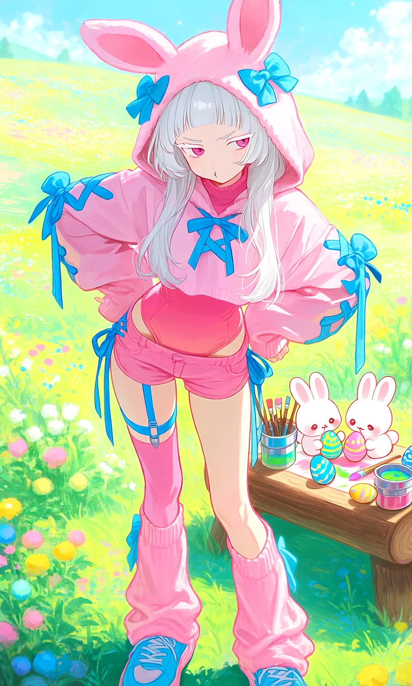
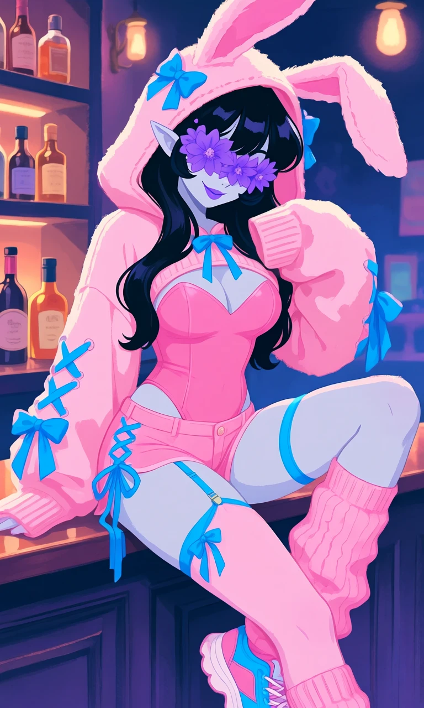

Bunny Hop Pop

Outfit Prompt
She is wearing a girly, fashionable outfit. She is wearing a pink under leotard, a pink cropped oversized hooded sweater, the sweater has puffy long sleeves that cover most of the woman's hands only her fingers peeking out, her sweater hood is on her head showing off pink bunny ears and blue bows on the hood. She has blue ribbon lace up ties on the sweater chest and blue ribbon lace up ties on the sleeves with bows at the end of the sleeves. She is wearing pink low cut shorts with blue ribbon lace up ties on the sides, a skinny large bow behind her shorts. She is wearing a pink stocking on only her left leg being held up by a blue garter belt, she is also wearing pink leg warmers on both her legs. She is wearing blue and pink gym shoes.
Outfit Examples



